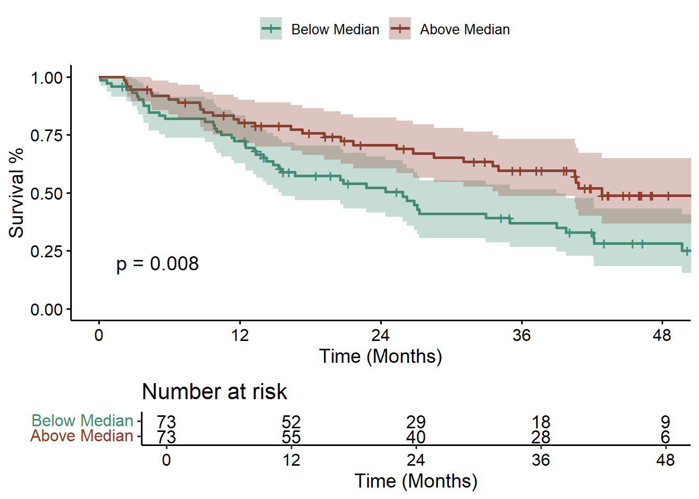
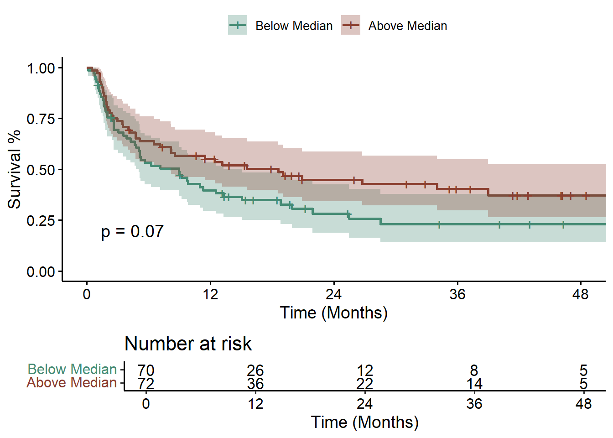
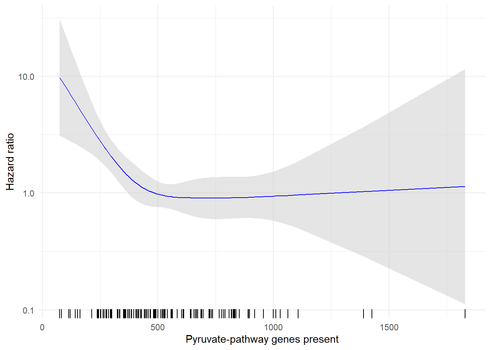
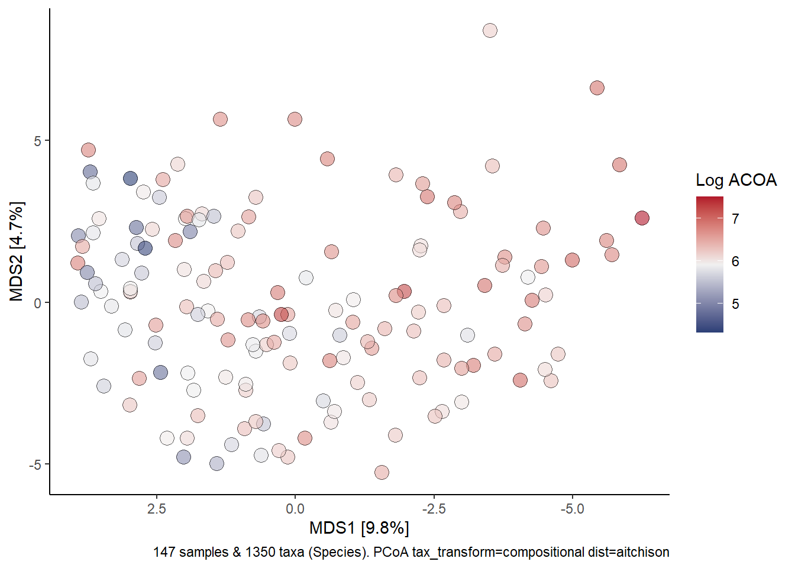
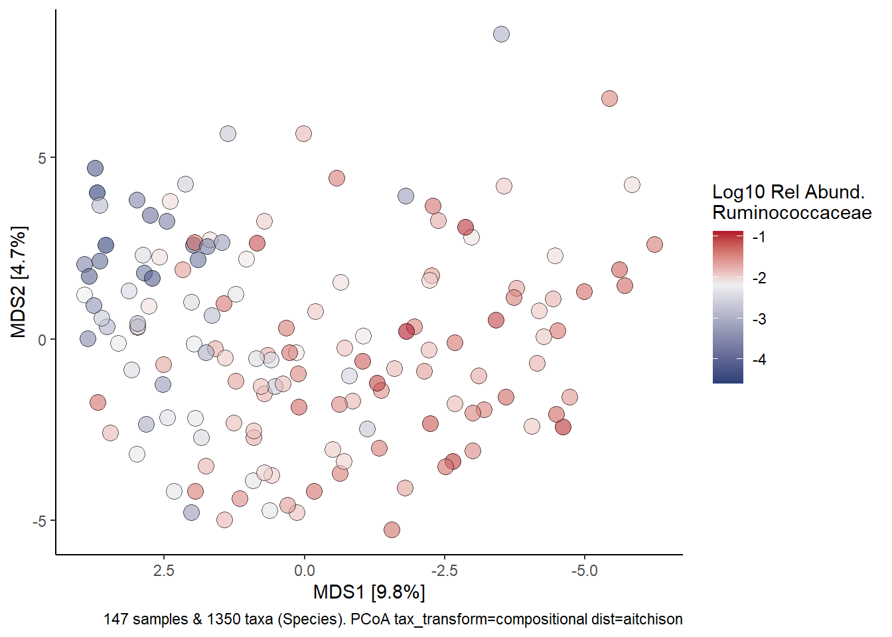
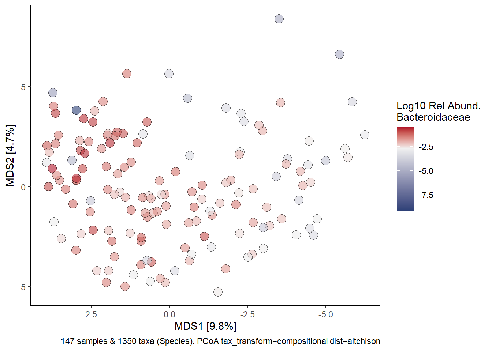
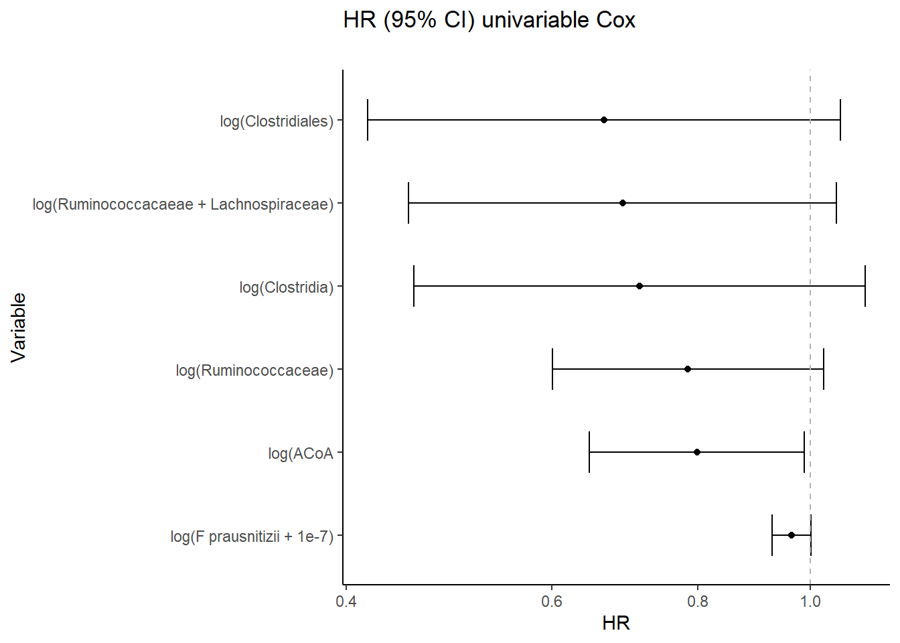
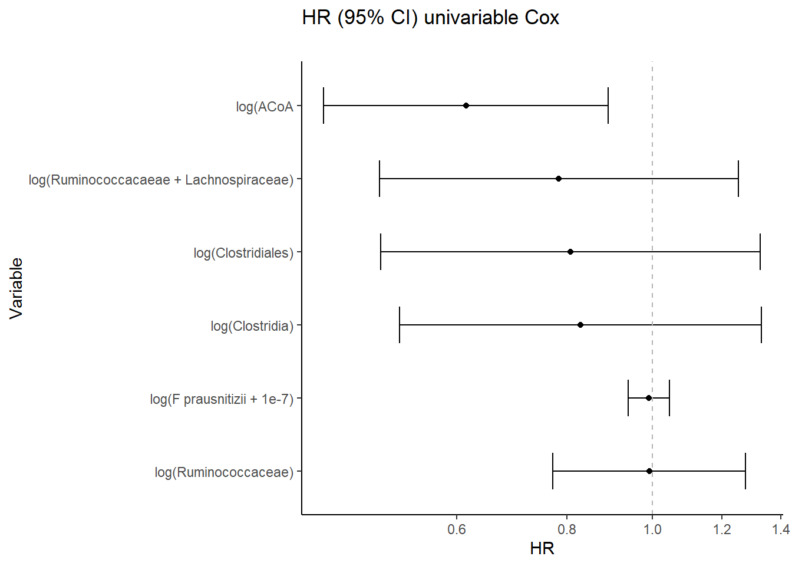

[1] "blinded_subject_id" "id_int" "cohort"
[4] "age" "impact_tmb_score" "cpb_drug"
[7] "ecog" "best_overall_response" "tt_pfs_d"
[10] "pfs_event" "tt_os_d" "event_os"
[13] "TMPT" "WMS_SGPID" "SAMPID"
[16] "total" "samp_id" "identifier.y"
[19] "Shannon" "tx" "age10"
[22] "med_buty" "fouraminobutyrate" "gluatarate"
[25] "lysine" "pyruvate"  Figure 2 - Butyrate Production Capacity from ACoA Pathway and ICB outcome
Figure 2 - Butyrate Production Capacity from ACoA Pathway and ICB outcome
Some of these cells will be executable using only the public data. These section panels Look like this. Other sections rely on data we are not able to make public (for example patient-level survival data). These section panels Look like this.
Here are the column names of the data we are plotting:
fouraminobutyrate, glutarate, lysine and pyruvate represent different parts of the butyrate synthesis pathway.
Survival plots as a function of pyruvate gene abundance:
Panel A
Survival by ACoA pathway gene abundance in stool above/below the median
First for overall survival (OS):
# cut the distribution of pyruvate into above/below median:
acoa_df <- acoa_df %>%
mutate(med_p = cut(pyruvate, quantile(pyruvate, probs=seq(0,1,0.5)), c("Below Median", "Above Median"))) %>% #ifelse(pyruvate > median(pyruvate, na.rm = T), "Above Median", "Below Median")) %>%
mutate(tt_os_months = tt_os_d/30.44) %>%
mutate(tt_pfs_months = tt_pfs_d/30.44) %>%
arrange(med_p)
fit<- survfit(Surv(tt_os_months, event_os) ~ med_p, data = acoa_df)
names(fit$strata) <- gsub("med_p=", "", names(fit$strata))
p <- ggsurvplot(fit, size = 1, # change line size
linetype = "solid", # use solid line
break.time.by = 12, # break time axis by 12 months
palette = c("aquamarine4", "coral4"), # custom color palette
conf.int = TRUE, # Add confidence interval
pval = TRUE, # Add p-value,
legend.title="",
risk.table = TRUE, risk.table.y.text.col = TRUE,
ylab = "Survival %",
xlab = "Time (Months)",
xlim = c(0,48)
)
print(p)
Then looking at Progression Free Survival (PFS) instead of OS:
fit<- survfit(Surv(tt_pfs_months, pfs_event) ~ med_p, data = acoa_df)
names(fit$strata) <- gsub("med_p=", "", names(fit$strata))
p <- ggsurvplot(fit, size = 1, # change line size
linetype = "solid", # use solid line
break.time.by = 12, # break time axis by 12 months
palette = c("aquamarine4", "coral4"), # custom color palette
conf.int = TRUE, # Add confidence interval
pval = TRUE, # Add p-value,
legend.title="",
risk.table = TRUE, risk.table.y.text.col = TRUE,
ylab = "Survival %",
xlab = "Time (Months)",
xlim = c(0,48)
)
print(p)
Panel B
Restricted cubic spline adjusted for age, diagnosis, and performance status identifies increasing hazard of overall mortality associated with below-median (<504 RPKM) ACoA pathway gene abundance among ICB recipients. Ticks along the x-axis reflect individual samples
model_spline_os <- coxph(Surv(tt_os_d, event_os) ~ rms::rcs(pyruvate,4) + age10 + factor(cohort) + ecog, acoa_df)
ptemp <- termplot(model_spline_os, se=T, plot=F)
buterm <- ptemp$pyruvate
center <- buterm$y[which(buterm$y == median(buterm$y))]
ytemp <- buterm$y + outer(buterm$se, c(0, -1.96, 1.96), '*')
exp_ytemp <- exp(ytemp - center)
spline_data <- data.frame(buty = buterm$x, Estimate = exp_ytemp[,1],
Lower = exp_ytemp[,2], Upper = exp_ytemp[,3])
ggplot(spline_data, aes(x = buty)) +
geom_ribbon(aes(ymin = Lower, ymax = Upper), fill = "grey80", alpha = 0.5) +
geom_line(aes(y = Estimate), color = "blue") +
geom_rug(sides = "b") + # Add rug plot at the bottom ('b') of the plot
scale_y_log10() + # Log scale for y-axis
labs(x = "Pyruvate-pathway genes present", y = "Hazard ratio") +
theme_minimal()
Taxonomy breakdown plots:
We will now plot some microbiome data, using a phyloseq object that contains our sequencing data. This object contains a list of the taxonomy of organisms identified, the abundance in each sample, and any associated sample specific metadata in one object.
Panel C
ps %>%
ps_filter(SAMPID.x %in% acoa_df$SAMPID) %>%
tax_fix() %>%
tax_transform(trans = "compositional", rank = "Species") %>%
dist_calc("aitchison") %>%
ord_calc("PCoA") %>%
ord_plot(fill = "log_acoa.x", size = 4, shape=21, alpha=0.6,
plot_taxa = c(1:5)) +
scale_fill_gradientn(colours=c("#2b3f76", "#f0f0f0", "#b2182b"), values=c(0, 0.5, 1)) +
theme_classic() +
labs(
fill = "Log ACOA"
)
rum_ps <- ps
sample_data(rum_ps)$log_rum = log(sample_data(ps)$Ruminococcaceae + 0.0001)
rum_ps %>%
ps_filter(SAMPID.x %in% acoa_df$SAMPID) %>%
tax_fix() %>%
tax_transform(trans = "compositional", rank = "Species") %>%
dist_calc("aitchison") %>%
ord_calc("PCoA") %>%
ord_plot(fill = "log_rum", size = 4, shape=21, alpha=0.6,
plot_taxa = c(1:5)) +
scale_fill_gradientn(colours=c("#2b3f76", "#f0f0f0", "#b2182b"), values=c(0, 0.65, 1)) +
theme_classic()+
labs(
fill = "Log10 Rel Abund.\nRuminococcaceae"
)
bac_ps <- ps
sample_data(bac_ps)$log_bac = log(sample_data(ps)$Bacteroidaceae + 0.0001)
bac_ps %>%
ps_filter(SAMPID.x %in% acoa_df$SAMPID) %>%
tax_fix() %>%
tax_transform(trans = "compositional", rank = "Species") %>%
dist_calc("aitchison") %>%
ord_calc("PCoA") %>%
ord_plot(fill = "log_bac", size = 4, shape=21, alpha=0.6,
plot_taxa = c(1:5)) +
scale_fill_gradientn(colours=c("#2b3f76", "#f0f0f0", "#b2182b"), values=c(0, 0.75, 1)) +
theme_classic() +
labs(
fill = "Log10 Rel Abund.\nBacteroidaceae"
)
Panel D Verification on External Dataset
Univariate Cox Survival Analysis
Panel E External Data
Univariate Cox regression analyses PFS relationship to ACoA gene abundance in external cohort.
wargo_surv_df <- readRDS("../data/cleaned_data/wargo_pfs_data_for_univariate_model.RDS")
model1_wargo <- coxph(Surv(pfs_d, pfsevent)~log(rum), wargo_surv_df)
model2_wargo <- coxph(Surv(pfs_d, pfsevent)~log(rum_lach), wargo_surv_df)
model3_wargo <- coxph(Surv(pfs_d, pfsevent)~log(clostridiales), wargo_surv_df)
model4_wargo <- coxph(Surv(pfs_d, pfsevent)~log(clostridia), wargo_surv_df)
model5_wargo <- coxph(Surv(pfs_d, pfsevent)~log(eval(faecalibacterium_prausnitzii+1e-7)), wargo_surv_df)
model6_wargo <- coxph(Surv(pfs_d, pfsevent)~log1p(pyruvate), wargo_surv_df)
models <- list(model1_wargo, model2_wargo, model3_wargo, model4_wargo, model5_wargo, model6_wargo)
results_df <- data.frame()
for (i in seq_along(models)) {
model <- models[[i]]
summary_model <- summary(model)
hr <- summary_model$coefficients[, "exp(coef)"]
lower_ci <- summary_model$conf.int[, "lower .95"]
upper_ci <- summary_model$conf.int[, "upper .95"]
pvalue <- summary_model$coefficients[, "Pr(>|z|)"]
results_df <- rbind(results_df, data.frame(
Model = paste0("model", i),
HR = hr,
Lower_CI = lower_ci,
Upper_CI = upper_ci,
pvalue = pvalue
))
}
results_df$source = rep("wargo", 6)
results_df$modelname = c("log(Ruminococcaceae)", "log(Ruminococcacaeae + Lachnospiraceae)",
"log(Clostridiales)", "log(Clostridia)", "log(F prausnitizii + 1e-7)", "log(ACoA")
ggplot(results_df) +
geom_point(aes(y=fct_rev(fct_reorder(modelname, HR)), x=HR)) +
geom_errorbarh(aes(y=fct_rev(fct_reorder(modelname, HR)), xmin=Lower_CI, xmax=Upper_CI), height=0.5)+
geom_vline(xintercept=1, lty=2, col="gray70") +
scale_x_continuous(trans="log") +
theme_classic() +
labs(title = "HR (95% CI) univariable Cox",
subtitle ="", y="Variable", x="HR")
Panel E MSK Data
Univariate Cox regression analyses PFS relationship to ACoA gene abundance in MSK Observational Data.
msk_df <- readRDS("../data/cleaned_data/interal_msk_data_for_univariate_model.RDS")
model1_msk <- coxph(Surv(tt_pfs_d, pfs_event)~log(rum), msk_df)
model2_msk <- coxph(Surv(tt_pfs_d, pfs_event)~log(rum_lach), msk_df)
model3_msk <- coxph(Surv(tt_pfs_d, pfs_event)~log(clostridiales), msk_df)
model4_msk <- coxph(Surv(tt_pfs_d, pfs_event)~log(clostridia), msk_df)
model5_msk <- coxph(Surv(tt_pfs_d, pfs_event)~log(eval(faecalibacterium_prausnitzii+1e-4)), msk_df)
model6_msk <- coxph(Surv(tt_pfs_d, pfs_event)~log1p(pyruvate), msk_df)
models <- list(model1_msk, model2_msk, model3_msk, model4_msk, model5_msk, model6_msk)
results_df <- data.frame()
for (i in seq_along(models)) {
model <- models[[i]]
summary_model <- summary(model)
hr <- summary_model$coefficients[, "exp(coef)"]
lower_ci <- summary_model$conf.int[, "lower .95"]
upper_ci <- summary_model$conf.int[, "upper .95"]
pvalue <- summary_model$coefficients[, "Pr(>|z|)"]
results_df <- rbind(results_df, data.frame(
Model = paste0("model", i),
HR = hr,
Lower_CI = lower_ci,
Upper_CI = upper_ci,
pvalue = pvalue
))
}
results_df$source = rep("msk", 6)
results_df$modelname = c("log(Ruminococcaceae)", "log(Ruminococcacaeae + Lachnospiraceae)",
"log(Clostridiales)", "log(Clostridia)", "log(F prausnitizii + 1e-7)", "log(ACoA")
ggplot(results_df) +
geom_point(aes(y=fct_rev(fct_reorder(modelname, HR)), x=HR)) +
geom_errorbarh(aes(y=fct_rev(fct_reorder(modelname, HR)), xmin=Lower_CI, xmax=Upper_CI), height=0.5)+
geom_vline(xintercept=1, lty=2, col="gray70") +
scale_x_continuous(trans="log") +
theme_classic() +
labs(title = "HR (95% CI) univariable Cox",
subtitle ="", y="Variable", x="HR")